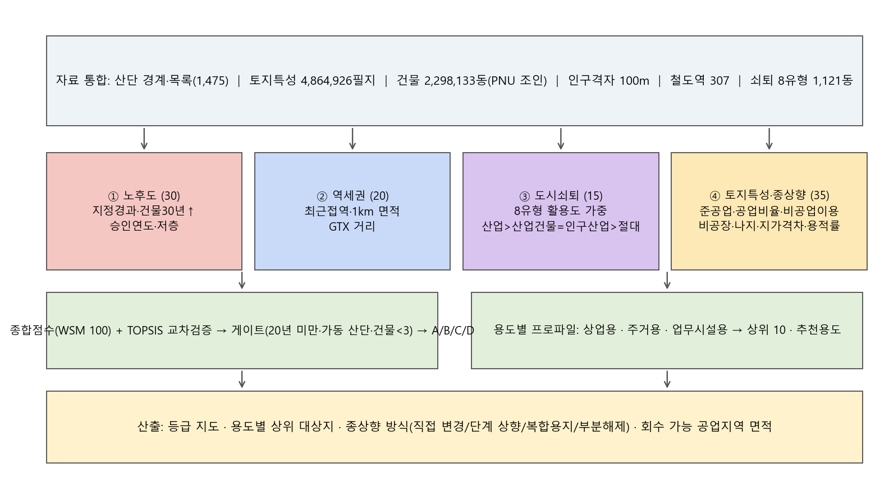
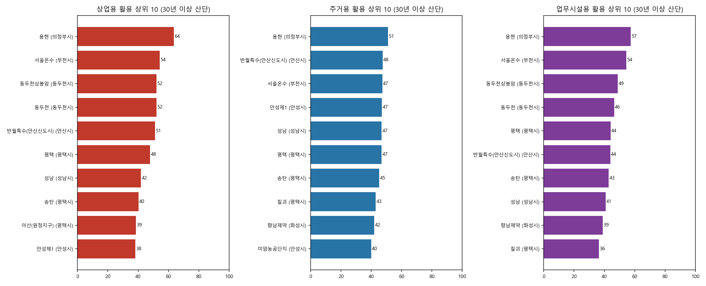
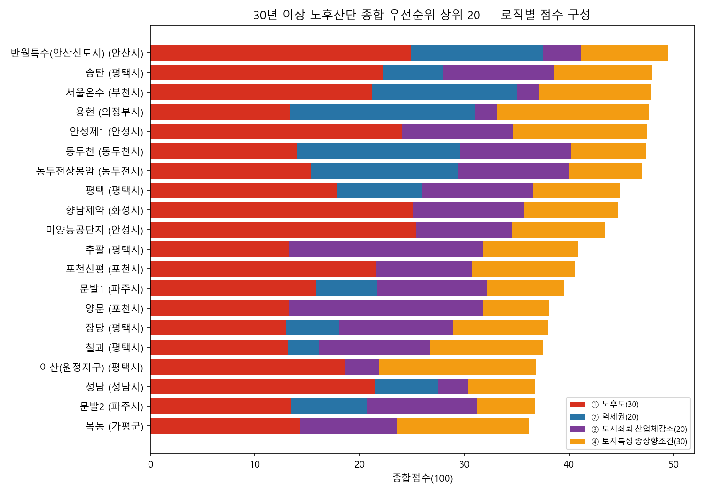

[경기도 노후 산업단지 — 역세권과 인구밀도]
경기도 산업단지 경계를 지정 후 몇 년이 지났는지(노후년도)로 색칠하고, 철도역 307곳과 인구 100m 격자를 같은 지도에 겹쳤습니다. 휠로 확대하면 QGIS 화면처럼 시군·산단 이름이 보이고, 역을 누르면 반경 안의 산단을 세어 주며, 거리 재기로 아무 두 점 사이를 잴 수 있습니다. 그림은 앞으로 계속 보강합니다.
노후 산업단지 × 철도역 역세권 × 인구밀도 격자
자료를 불러오는 중…산단은 노후년도(2026 − 지정 연도)가 클수록 진한 붉은색, 인구 격자는 인구밀도가 높을수록 진한 초록색입니다. 체크를 끄고 켜서 두 층을 따로 또는 겹쳐서 보실 수 있습니다. 역세권 1km 안 산단 영역은 역 반경 1km 원과 산단 경계가 겹치는 부분만 잘라 붉게 얹은 것입니다. 시군 이름은 진한 회색, 산단 이름은 파란색으로 QGIS 화면과 같게 두었습니다 (산단 이름은 확대해야 나옵니다).
역세권 · 거리
역을 누르면 반경 안 산단이 여기에 나옵니다. 산단을 누르면 노후년도와 가장 가까운 역, 행정동을 누르면 쇠퇴 유형, 빈 곳을 누르면 그 자리의 인구밀도가 나옵니다.
자료: 산업입지정보망 산단 경계(DAM_DAN)·목록(2026), 경기 철도역 307(GTX 포함), SGIS 인구 100m 격자, 도시쇠퇴도 8유형(행정동 1,121 — 인구감소·사업체감소·노후건축물 조합), 토지특성(공업 용도지역), 2026 행정구역. 노후년도 = 2026 − 지정 연도. 회색 산단은 경계는 있으나 목록과 아직 짝이 맞지 않은 곳.
역세권(철도역 1km) 안에 들어오는 산업단지
—철도역 307곳의 반경 1km 원과 경기 산단 경계 206곳을 교차해, 역세권에 걸치는 면적과 그 비율을 산단마다 셌습니다. 노후년도가 크고(30년 이상) 역세권 비율이 높은 곳이 역세권 상업·업무 복합 전환의 1차 후보이고, 지정 10년 안쪽의 새 산단은 역세권이라도 보호·고도화 대상입니다. 머리글을 누르면 그 칸으로 줄을 세웁니다.
역세권(철도역 1km) 포함 영역 — 움직이는 지도
범례
자료를 불러오는 중…휠로 확대·끌어서 이동. 붉은 영역을 누르면 역세권 안 면적·비율, 역을 누르면 노선.
경기도 산업단지 노후도 현황과 자료
목록 기준 · 2026년노후도 현황
- 경기도 산단 229개 (일반 194 · 도시첨단 17 · 국가 17 · 농공 1)
- 지정 후 20년 이상 83개(36%), 30년 이상 47개(21%), 40년 이상 13개
- 1970~80년대 지정된 반월·시화(안산·시흥), 아산(평택), 성남일반, 서울온수(부천), 안성1·2 등은 도시 안쪽으로 편입돼 주거지와 섞여 있음
- 과밀억제권역 14개 시의 20년 이상 산단은 11개 — 이곳 공업지역은 새로 지정할 수 없는 물량이라 전환 시 회수 가치가 가장 큼
- 분석 목적: 첨단산단 조성에 필요한 공업지역 물량을, 산업기능을 잃은 노후산단·공업지역의 주거·상업 전환으로 회수해 재배분하는 방안의 공간 근거
구축한 자료
- 산단 목록 1,475 → 지오코딩 1,447 성공(네이버 1,403 · 카카오 44); 경계(DAM_DAN 1,363)와 5단계 매칭 — 경기 229 중 223 짝
- 노후년도 = 2026 − 지정 연도 (목록의 지정일 기준)
- 철도역 307 (GTX 포함) · SGIS 인구 100m 격자 1,029,094칸 · 2026 시도·시군구·읍면동
- 토지특성(경기 약 450만 필지)·건축물(2,298,133동)은 통합 중 — 끝나면 전환 우선순위(4축 지표, A~D 등급)를 여기에 더합니다
도시쇠퇴도 8유형 · 공업 용도지역
행정동 1,121 · 인구감소·사업체감소·노후건축물 조합행정동마다 인구 감소·사업체 감소·노후 건축물(20년 이상 비율) 세 지표를 조합해 8유형으로 나눈 것입니다. 전환 활용도 가중치는 산업쇠퇴 1.0 > 산업건물·인구산업 0.8 > 절대쇠퇴 0.6 > 인구건물 0.35 > 건물·인구 0.3 > 성장 0 입니다. 공업 용도지역은 토지특성(필지)에서 일반·준·전용공업지역을 녹여 만든 것입니다. ① 지도에서 같은 층을 켜고 끌 수 있습니다.
도시쇠퇴도 8유형 — 움직이는 지도
범례
자료를 불러오는 중…행정동을 누르면 유형·가중치·지표.
토지특성 — 공업 용도지역 — 움직이는 지도
범례
자료를 불러오는 중…구역을 누르면 용도지역명·면적.
전환 우선순위 — 4대 로직 100점, A~D 등급, 용도별 상위 10
자료를 불러오는 중…산단 206곳과 산단 밖 공업지역 클러스터 109곳(준공업·공업지역 필지를 묶은 것), 모두 315개 단위를 ① 노후도 30 · ② 역세권 20 · ③ 도시쇠퇴 15 · ④ 토지특성·종상향 조건 35의 100점으로 매겨 산단과 클러스터 각각 상위 15%를 A(전환 우선), 40%까지를 B(복합화), 나머지를 C(고도화 유지)로 두고, 지정 20년 미만·건물 3동 미만·가동 중인 산단은 D(보호·게이트)로 뺐습니다. 상업·주거·업무 용도별로는 가중치를 달리한 점수로 30년 이상 산단 가운데 상위 10을 따로 뽑았습니다.

등급 지도 — 움직이는 지도
범례
자료를 불러오는 중…A·B 등급 폴리곤을 누르면 종합점수·추천 용도·등급 뜻. C·D 는 검은 테두리 산단으로 보입니다.
30년 이상 노후산단 유형화
| 유형 | 개소 | 면적 ha | 건물 30년↑ | 종합점수 | A/B | 대표 산단 |
|---|---|---|---|---|---|---|
| Ⅰ 역세권·산업쇠퇴형 | 5 | 209 | 26% | 47.1 | 1/2 | 송탄, 동두천, 동두천상봉암 |
| Ⅱ 역세권·비쇠퇴형 | 4 | 1,641 | 25% | 48.6 | 3/0 | 반월특수(안산신도시), 용현, 서울온수 |
| Ⅲ 비역세권·산업쇠퇴형 | 25 | 900 | 15% | 36.5 | 0/3 | 안성제1, 향남제약, 미양농공단지 |
| Ⅳ 비역세권·비쇠퇴형 | 6 | 1,458 | 33% | 35.8 | 0/0 | 아산(원정지구), 양주도하, 반월도금 |
역세권 = 역 1km 안 면적 비율이 있는 곳, 산업쇠퇴 = 도시쇠퇴 8유형 가운데 산업 관련 쇠퇴형. 30년 이상·조성완료 산단 40곳 기준.
용도별 전환 상위 10 (30년 이상 산단)
상업용은 역세권·상업 지가격차·인구, 주거용은 인구·주거 지가격차·주변 주거, 업무시설용은 역·GTX·공공기관 이전(GAM)에 무게를 둔 점수입니다. 머리글을 누르면 정렬됩니다.

종합 우선순위 상위 15 (30년 이상 산단)

산단 밖 공업지역 클러스터 상위 15
산단이 아닌 준공업·공업지역 필지를 30m 버퍼로 묶은 클러스터(3ha 이상, 과밀억제권역 1ha 이상) 109곳 가운데 종합점수 상위 15.
준공업지역의 실제 기능 판정 — 주거기능전환지역
자료를 불러오는 중…서울시 준공업지역 산업기반평가모델(주거기능전환지역 25개 행정동)과 같은 방식으로, 토지특성정보의 용도지역(준공업지역 1,907 ha · 8,026필지)과 PNU로 조인한 건축물의 실제 용도(연면적)를 행정동별로 집계해 판정했습니다. 기준: 주거 연면적 ≥ 50% · 산업 ≤ 20% → 주거기능전환지역, 주거+상업근생 ≥ 60% · 산업 ≤ 25% → 주거·상업 복합전환지역, 산업 ≥ 50% → 산업기능유지지역, 산업 30~50% → 주공혼재(산업우세), 그 외 → 주공혼재(주거우세). 1 ha 미만이거나 용도를 확인한 건물이 10동 미만이면 판정에서 뺐습니다.
범례
자료를 불러오는 중…행정동 폴리곤을 누르면 판정과 주거·산업·상업 연면적 비율.
행정동별 판정 표
다음 그림 (준비 중)
새 그림은 <section class="fb-fig"> 한 덩어리를 이 위에 더하면 같은 꼴로 붙습니다. 정적 그림은 img.ag-zoom 으로 두면 눌러서 확대됩니다.
✎ 경계는 산업입지정보망 단지경계(DAM_DAN)이고 목록과 이름·위치로 짝을 맞춘 것이라, 지구 나눔이 다른 곳(반월·시화, 아산 등)은 한 경계에 목록 여러 줄이 붙습니다. 역세권 거리는 직선거리이며, 인구밀도는 100m 격자 인구 × 100 으로 셈한 명/㎢ 입니다.